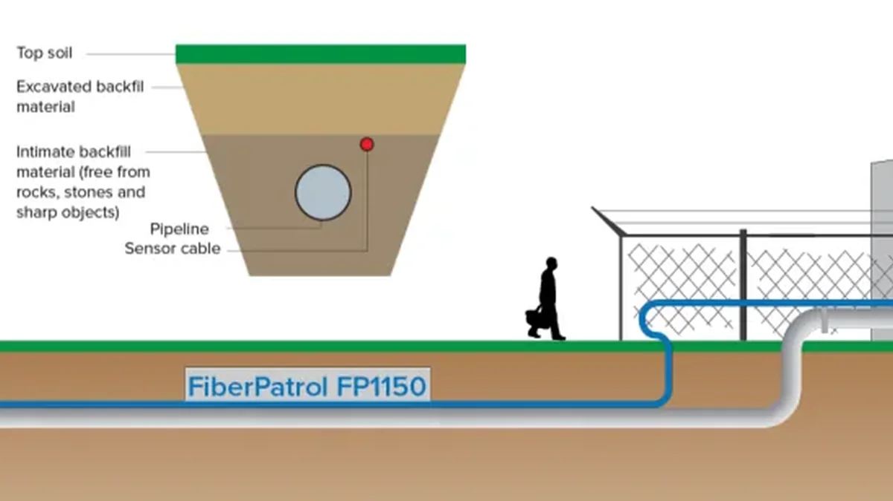
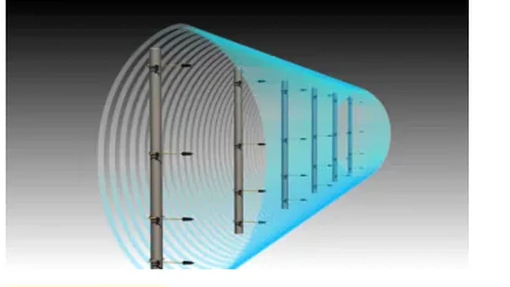
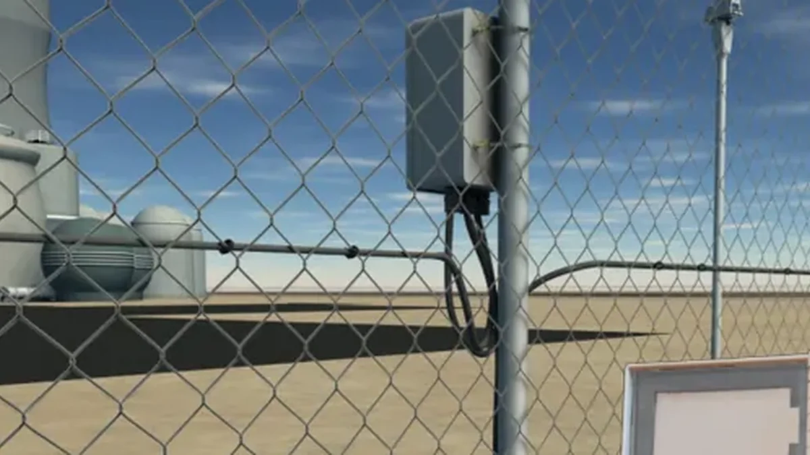
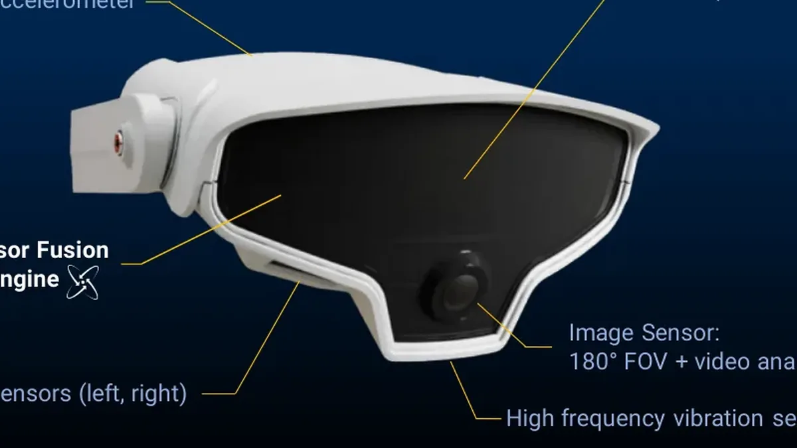
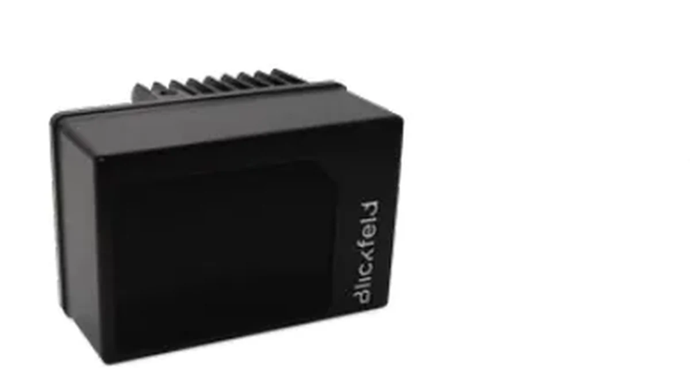
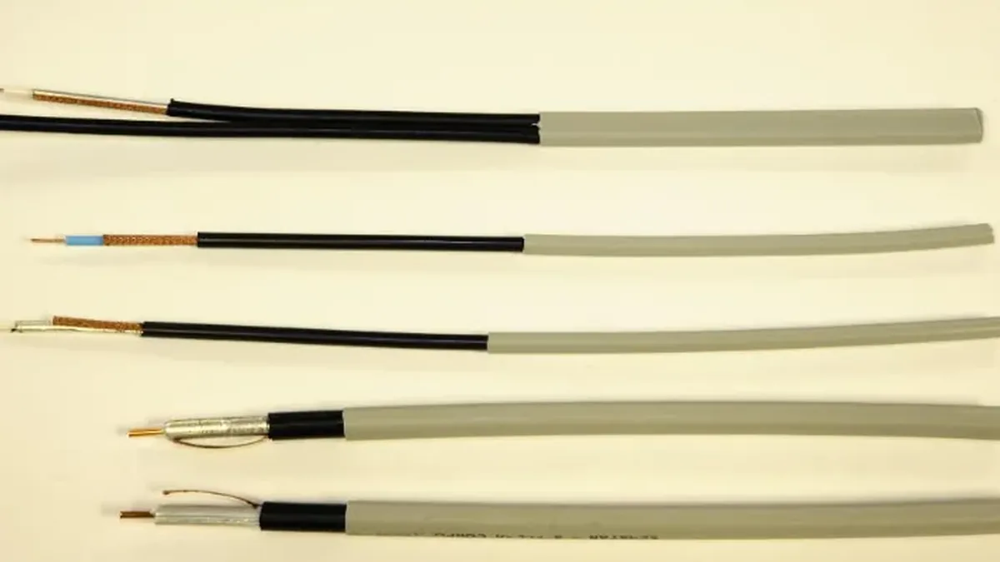

Solutions
추천 솔루션
현장 목적(펜스/매설/게이트/개활지) 기준으로 권장 구성을 빠르게 확인합니다.
Finder
제품 찾기
카테고리/설치대상/환경/프로토콜/위치파악 여부로 즉시 필터링합니다.
Downloads
기술자료 센터
문서를 파일이 아니라 문서→버전→언어로 관리하여 지속 업데이트가 가능합니다.
대표 제품
FP1150, XField, FlexZone, MultiSensor, 3D LiDAR, OmniTrax 기준으로 제품 상세/다운로드를 연결했습니다.

DAS
FiberPatrol FP1150
장거리 구간의 침입 이벤트를 ±4 m 수준으로 위치까지 제공합니다.

Volumetric
XField
정전장 기반의 ‘높고 좁은’ 감지존으로 펜스/벽/옥상에 적용합니다.

Fence PIDS
FlexZone
펜스 구간 침입(절단·등반·월담)을 감지하고, ±3 m 수준으로 위치를 제공합니다.

AI Fusion
Senstar MultiSensor
레이더/PIR/영상분석을 결합해 오경보를 줄이고 상황 인지를 강화합니다.

3D LiDAR
Smart 3D LiDAR
3D 포인트클라우드 기반으로 프라이버시를 보호하면서 정밀 감지가 가능합니다.

Buried
OmniTrax
매설형 포티드 코엑스 센서로 은밀하게 지형을 따라 경계를 보호합니다.
운영 관점 핵심
“페이지 수정”이 아니라 “데이터 업데이트”로 운영하기
1
스펙은 문장 대신 ‘값(필드)’으로
Technical Data는 CMS 구조화 필드로 저장되어야 필터/검색/표 생성이 자동화됩니다.
2
다운로드는 ‘문서 메타데이터’로
문서(정체성) → 버전(Release) → 언어별 파일(Asset) 구조로 운영해야 업데이트가 누적돼도 깨지지 않습니다.